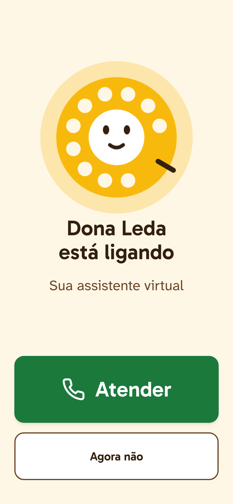
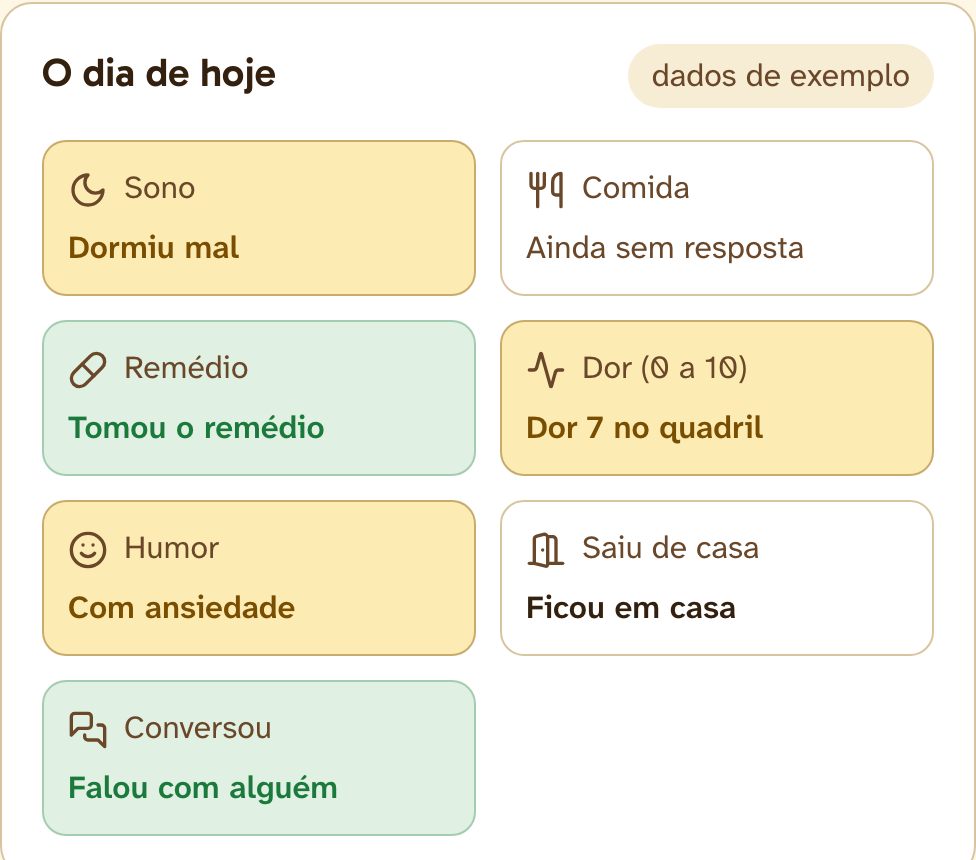
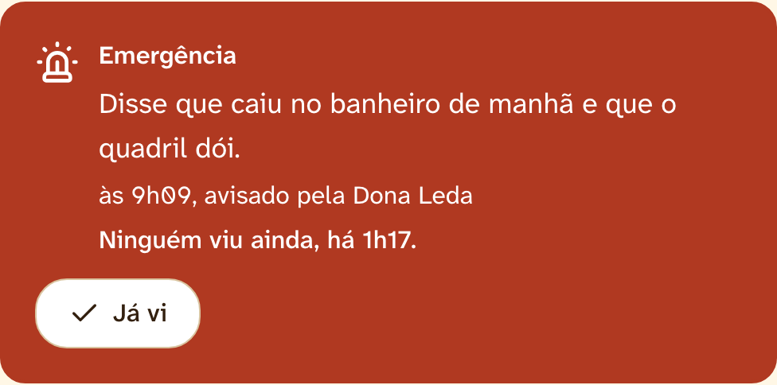
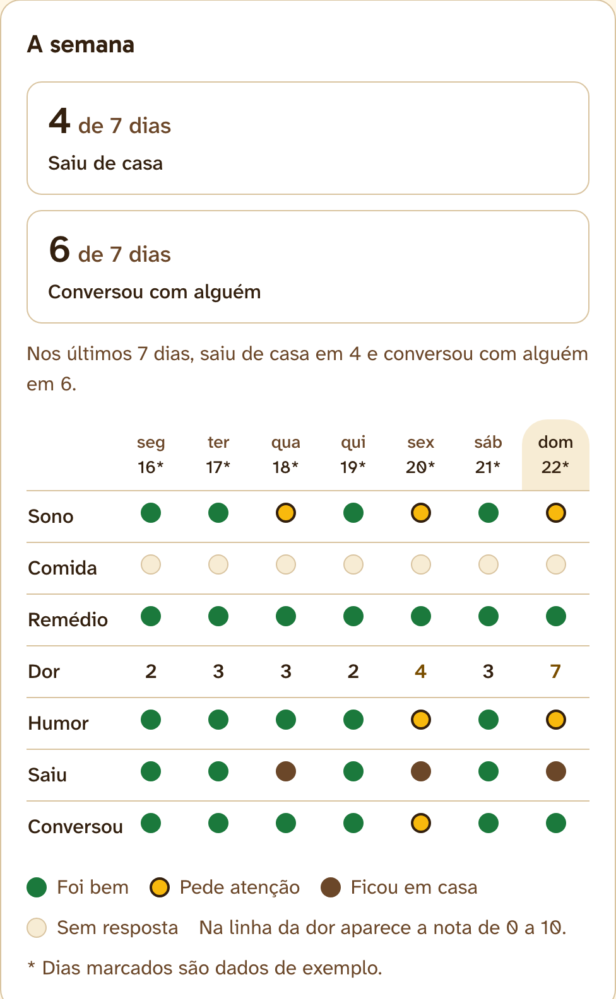
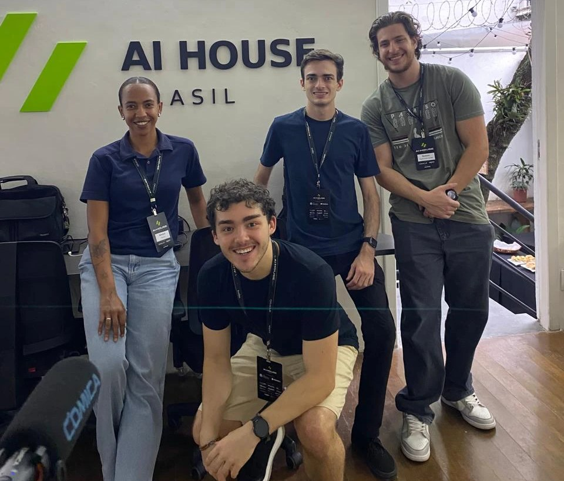

Dona Leda
A assistente de cuidado de quem envelhece
Quantas vezes você ainda vai ver seus pais?
37%
dos brasileiros com 50+ não veem os filhos semanalmente
1 em 6 se sente sozinho sempre
O Brasil envelhecendo
Dos 35,2 milhões de hoje
35,2 mi
6,4 mi
700 mil
idosos no Brasil
moram sozinhos
famílias podem pagar: R$ 1,1 bi por ano
ELSI-Brasil, entre quem tem filhos · IBGE · estimativa do time
Saber como ela está custa caro
R$ 2.800
R$ 6 mil
Cuidador
Casa de repouso
É caroDe R$ 2.800 a R$ 6 mil por mês
É manualDepende de uma pessoa do lado o tempo todo
Não guarda os dadosO dia a dia do idoso não fica registrado
Não usa tecnologiaDeixa de fora o que a tecnologia faz pelo idoso
Por mês · Cidesp e Mercado Mineiro, 2026
O idoso só precisa atender

→

→



1. Ela ligaO celular toca na hora combinada
2. Conversa e lembraPergunta do dia e do que ele já contou
3. A família acompanha no painelO dia de hoje, o aviso na hora e a semana inteira do idoso
Por dentro: a conversa passa pela Agora
Agora, ao vivo
Lá fora, isso já funciona
Dados públicos, lidos em 21/11/2026
O que a gente testou
Avós do time atenderam a Dona Leda em 21 e 22/11.Aprendemos com a casa parceira que quem precisa ainda mora em casa.
Um produto, três caminhos até o idoso
Dona Leda
liga todo dia pro idoso
Da ligação diária ao segundo cérebro do idoso
Hoje
Em seguida
Depois
Quem ela atendeIdoso que mora sozinho
Pós-operatório
Tratamento em casa
Por onde ela ligaCelular e tablet
Telefone comum
Pulseira e caixa de voz
Quem pagaA família
Planos de saúde
Seguros e prefeituras
O que ela fazLiga, lembra e avisa
Pede remédio e compras, marca a consulta
Mecanismo preditivo de doenças pela voz
Quem constrói a Dona Leda
